4.2 非齐次线性方程组
一、非齐次线性方程组解的结构
| 对于n元非齐次线性方程组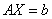，当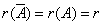时，方程组有解，又当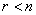时，方程组有无穷多解，这时，我们又如何来表示这全部解呢？ 要特别注意到：由于非齐次性，即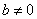，则方程组的两个解的和不再是它的解，即说明方程组的解集合不构成向量空间，因而对于非齐次线性方程组根本不存在解空间与基础解系的概念。 对任一个非齐次线性方程组，一定对应一个齐次线性方程组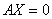，称为的导出组，它们的系数矩阵是相同的A，我们首先来讨论它们的解之间的性质： |
|
性质1：如果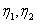是非齐次线性方程组的解，则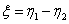是它的导出组的解。 因为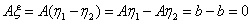 性质2：如果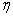是非齐次线性方程组的解，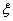是它的导出组的解，则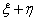总是的解。 因为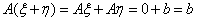 由性质1和性质2可知：的任意一个解一定可以写成的任意一个取定的解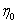（称为特解）与导出组的任意一个解之和，于是得到定理：
|
|
例1：设为4元非齐次线性方程组，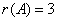，设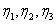为的三个解，已知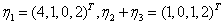，求的通解。 解：由定理2。1，非齐次线性方程组的通解由两部分相加组成，一部分是本身方程组的一个特解，另一部分是对应导出组的通解，即对应导出组的基础解系的任意线性组合对本题可取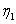为一个特解，因而关键找导出组的一个基础解系，它含有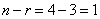个解，即任意一个非零解都是导出组的基础解系。 因为都是的解，所以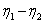和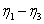都是的解，它们的和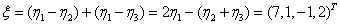 就是的一个非零解，也就是的一个基础解系，因而的通解为 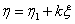， |
二、非齐次线性方程组的通解的求法
| 在非齐次线性方程组有无穷多解时，首先求出方程组的一般解，即约束未知量由自由未知量所表示的表达式，然后把一般解改写为列向量的形式，即可得到方程组的通解。 例2：求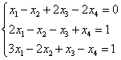的通解。 解： 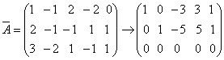 因此，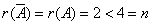 方程组的一般解为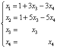，即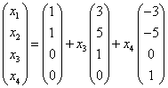， 则取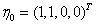为一个特解。 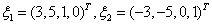为导出组的一个基础解系，从而方程组的通解为 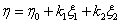（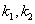为任意常数） |
|
例3：当参数a为何值时，方程组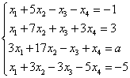有解？当它有解时，求出它的通解。 解： 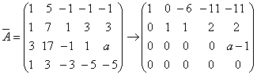 当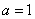时，，方程组有无穷多解，且一般解为  ，则方程组的通解为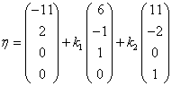（为任意常数） ，则方程组的通解为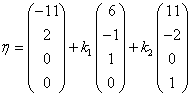（为任意常数）显然，当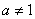时，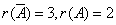，则方程组无解。 |
|
例4：参数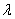为何值时，方程组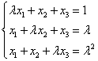无解？有唯一解？有无穷多解？无穷多解时，求出它的通解。 解：因为方程个数与未知量个数相同，又参数出现在系数矩阵中，作初等行变换比较麻烦，所以用克兰姆法则，即系数矩阵A的行列式入手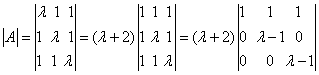 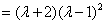 （1）当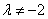且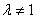时，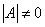，则方程组有唯一解 （2）当 可见，则方程组无解 （3）当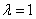时， 可见，则方程组有无穷多解，且一般解为 所以方程组的通解为（为任意常数） |
请认真答题，测试一下你对前面知识点的学习情况！
(单选题) 19．
【答案】D
【解析】
【知识点】非齐次线性方程组解的结构
请认真答题，测试一下你对前面知识点的学习情况！
(单选题) 20．已知某个3元非齐次线性方程组Ax=b的增广矩阵经初等行变换化为：，若方程组无解，则a的取值为( )
【答案】A
【解析】只有当时，方程组无解，故要求，解得a=0..
【知识点】非齐次线性方程组的通解的求法